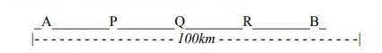

Movimiento Rectilineo Uniformemente Variado (M.R.U.V)
Vamos a estudiar el mas sencillo de los movimientos uniformemente variados, es decir, el movimiento cuya trayectoria es una recta y el modulo de la velocidad varia la misma cantidad en cada unidad de tiempo.
A este tipo de movimiento lo llamamos movimiento rectilíneo uniformemente variado.
Un movimiento es RECTILÍNEO UNIFORMEMENTE VARIADO, cuando la trayectoria del móvil es una linea recta y su velocidad varia la misma cantidad en cada unidad de tiempo
En forma abreviada, el movimiento rectilíneo uniformemente variado se anota así (M.R.U.V.)
Se puede decir que a diferencia del movimiento rectilíneo uniforme que la distancia recorrida son iguales por cada intervalo de tiempo igual, en el movimiento rectilíneo uniformemente variado las distancias recorridas son diferentes por intervalo de tiempo igual.Esto hace que la velocidad varíe en su módulo (rapidez) y la razón de está variación de velocidad por unidad de tiempo se llama aceleración.


Este dibujo representa un movimiento rectilíneo, en el cual la velocidad en cada carro es mayor que en el punto anterior.
Como cada carro representa la posición del móvil en cada unidad del tiempo, significa que el móvil aumenta su velocidad en cada unidad de tiempo.
En forma general. A este tipo de movimiento, en que la velocidad aumenta en cada unidad de tiempo, se le llama movimiento uniformemente acelerado.
Un movimiento es RECTILÍNEO Y UNIFORMEMENTE ACELERADO, cuando su trayectoria es una linea recta y su velocidad aumenta en cada unidad de tiempo.

Este dibujo representa un movimiento rectilíneo, en el cual la velocidad en cada auto disminuye 5m/seg
Como cada carro representa un movimiento la posición del móvil en cada unidad de tiempo, significa que el móvil disminuye su velocidad en cada unidad de tiempo.
En forma general. A este tipo de movimiento en que la velocidad disminuye en cada unidad de tiempo, se le llamada movimiento uniformemente retardado.
Un movimiento es RECTILÍNEO Y UNIFORMEMENTE RETARDADO,cuando su trayectoria es una linea recta y su velocidad disminuye en cada unidad de tiempo
Nota: Las formulas y ecuaciones se usan con signo MAS cuando el movimiento es acelerado, y con signo MENOS cuando el movimiento es retardado.
Velocidad Media:
En muchos casos, cuando estudiamos un movimiento rectilíneo variado entre dos
puntos, no nos interesa conocer lo que ocurre a lo largo de la trayectoria, pues solamente tomamos en cuenta el inicio y final del movimiento, es decir, que consideramos el movimiento rectilíneo variado como un movimiento rectilíneo uniforme, por lo tanto, en el transcurso de toda la trayectoria, consideramos que la velocidad es constante. A esta velocidad que consideramos constante la llamamos velocidad media.

Veamos un ejemplo para aclarar idea:

El dibujo representa la trayectoria rectilínea seguida por un autobús de pasajeros que parte de A y llega a B a 100km de distancia.
El movimiento se desarrolla asi:
Sale de A con una determinada velocidad y llega a P, que es una parada, donde suben y bajan pasajeros. Sale de P con otra velocidad y llega a Q, que es otra parada. Sale de Q con otra velocidad y llega a R, donde carga gasolina
Desde R llega hasta B sin detenerse. Desde A hasta B ha tardado 2 horas.
Para un observador que este en B, como no conoce el recorrido del autobús, se supone que el movimiento es rectilíneo uniforme, por lo tanto solamente le interesa la distancia recorrida, que es 100km, y el tiempo que se emplea en recorrerla, que es de 2 horas, y con estos datos calcula la velocidad media, que seria:
Datos:
d= 100km
t= 2h
Vm= ?
Vm= d/t = 100km/2h = 50km/h
Vm= 50km/h
Es decir que para el observador que esta en B, el autobús recorre los 100km en 2h con una velocidad constante de 50km/h
En un movimiento variado se llama VELOCIDAD MEDIA entre dos puntos la velocidad constante que debe tener el móvil para recorrer la misma distancia y en el mismo tiempo que la recorrería el móvil con movimiento variado.
La velocidad media la anotamos así: Vm
Velocidad Promedio:
Cuando en un movimiento rectilíneo variado sumamos sus diferentes velocidades y las dividimos entre el numero de ellas obtenemos una velocidad que se llama velocidad promedio.
Para determinar la velocidad promedio de un movimiento rectilíneo variado, no nos interesa, ni el tiempo transcurrido, ni la distancia recorrida, solamente nos entereza las velocidades que intervienen en el movimiento.
En un movimiento variado, se le llama velocidad promedio, a la velocidad que se obtiene sumando todas las velocidades que intervienen en el movimiento y dividiendo por el numero de ellas.
Velocidad Instantánea:
Es la que se lee en los velocímetros de los automóviles, se mide en distancia recorrida por el móvil en un intervalo de tiempo muy corto.
Si estudiamos el movimiento retardado de un cuerpo hasta que éste se detiene se puede usar las ecuaciones de TIEMPO MÁXIMO y DISTANCIA MÁXIMA.

Transformación de unidades de aceleración:
Para transformar las unidades de aceleración, se utiliza el mismo procedimiento que utilizamos en las unidades de rapidez, con la diferencia que el tiempo va al cuadrado (véase Movimiento Rectilíneo Uniforme/ Transformación de unidades de rapidez):
EJEMPLO a)
Para pasar 72/h² a m/seg² Pasamos Km a m de la forma usual: 72km • 1000m=72000m. Como se esta multiplicando, la unidad de tiempo estará dividiendo, con la diferencia de que estará elevado a la 2: 72000m / (3600s)² = 72000m / 12960s² =5.55 m/s²
La operación completa se escribiría así:
72km • 1000m=72000m / (3600s)² = 72000m / 12960s² =5.55 m/s²
Ejercicios:
35m/min² a cm/seg²
108km/h² a cm/min²
18m/min² a km/seg²
40m/min² a km/seg²
0.5cm/seg² a km/h²